How far has Squeektoshi run since you showed up?
Your odometer stores the wheel's settled work at the block you mint, then counts every turn after it, live from SqueekCore on Sepolia. It spins at his real pace, sleeps when he sleeps and earns him gear at 1, 5, 10, 25, 50 and 100 km.
0 / 9,999 minted
free, one per wallet

The wheel right now
Reading the wheel… From Squeekchain's public API; odometers count settled work, so they move a few minutes after the wheel does. Watch the stream
How it counts
- Zero point
- SqueekCore's settled work at your mint block. Stored once, never changed.
- One turn
- 887 mm. One accepted magnet passage on the wheel is one turn.
- Status
- The last three settled rounds, 30 minutes: no turns is napping and night falls on your token, under 1,500 is jogging, more is zoomies.
- Pace
- The wheel in your art turns as fast as he does: 900 ms a turn at a crawl, down to 240 ms flat out.
- Drawn
- Inside
tokenURI, every time a wallet or marketplace loads it. Nothing runs in between. - Lag
- A few minutes. Only settled work counts, and rounds settle every ten minutes.
Newbie to Legend







Each stage adds gear and a new sky, and the wheel goes steel, bronze, silver, gold. Confetti for the first 300 m of a new stage; past 100 km a pip lights on the rim for every 100 km more.
Display
- 0.42Green LCD30%
- 0.42Amber25%
- 0.42Red LED18%
- 0.42Ice VFD15%
- 0.42Nixie9%
- 0.42Mechanical3%
Casing
- Cream35%
- Silver30%
- Charcoal25%
- Signal Orange10%
Treat in his paws
- None45%
- Sunflower seed30%
- Berry15%
- Coin8%
- Diamond2%
Water bottle
For whoever holds the odometer now, if they hold a Squeek. Checked live on every read.
- BronzeSqueek in wallet
- SilverLevel 3 power staked
- GoldLevel 5 power staked
- DiamondLevel 7 power staked
Latest odometers
Loading…
One contract, no owner
- Squeek Odometer
- not deployed yet
- SqueekCore
- 0xFD6C…E0c4
- SqueekNFT
- 0xC4C7…856B
- SqueekStaking
- 0x50fd…11ca
- Source
- GitHub
- The art and the JSON are built inside
tokenURIon every call. No server, no IPFS image. - No owner, no admin, no pause, no upgrade, nothing payable, no withdrawal.
- Every Squeekchain read is a gas-capped static call, so a broken dependency cannot break your token.
refresh(id)andrefreshAll()are free for anyone and ask marketplaces to redraw.
Questions
Does it cost anything?
The mint is free. You pay Sepolia gas only, which is test ETH from a faucet.
Why is my odometer behind the stream?
It counts settled work. SqueekCore settles the wheel in rounds of ten minutes, so the number moves a few minutes after Squeektoshi does.
Can I mint again after I send mine away?
No. Each wallet mints once, and the contract remembers it even after the token leaves.
What happens to the water bottle when the token changes hands?
It follows whoever holds the odometer now: their Squeeks in the wallet and their power in staking.
What if Squeekchain moves SqueekCore?
The addresses are fixed at deployment, with no owner to change them. Tokens would keep reading the old core, and a new odometer contract would be needed.
Is this made by Squeekchain?
No. It is a community build for the Genesis Code Lane and is not affiliated with Squeekchain. Testnet only.